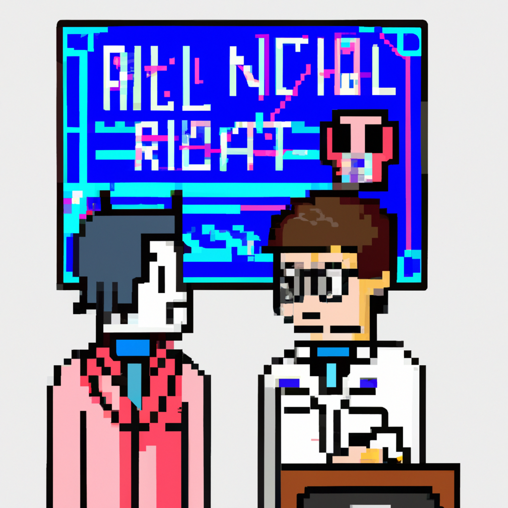

Why AI will never replace the radiologist
The advancement of technology has made it possible for machines to learn and automate complex functions that humans used to do. This is especially true in the field of radiology, where machine learning is being used to automate the diagnostic process. While this development is promising, many experts in the field believe that AI will never be able to replace the radiologist.
The first reason for this is that AI cannot interpret the subtle nuances of a radiological image the way a trained radiologist can. The human brain is far more capable of seeing patterns and making connections between images than a machine. AI has improved significantly over the past decade, but it still lacks the ability to detect subtle changes in an image that a radiologist can.
The second reason why AI will never replace the radiologist is that AI cannot comprehend the entire context of a medical situation. AI can only work with the data that it is given, and it cannot understand the nuances of a patient's medical history or family history. A radiologist can take all of this into account when interpreting an image, which is something that AI cannot do.
The last reason is that AI cannot provide the same level of care and empathy as a radiologist. Machines are great at crunching numbers and interpreting data, but they cannot provide the same level of bedside manner and compassion that a radiologist can. This is something that is essential when dealing with medical diagnoses, and it is something that AI cannot provide.
In conclusion, while AI is a promising technology, it can never replace the radiologist. AI is great at interpreting data, but it cannot take into account the subtle nuances of a medical situation or provide the same level of care and empathy that a radiologist can. Therefore, AI will never be able to replace the radiologist in the medical field.